Complete AC refresh with an OEM R134a conversion
Updated on September 26, 2026
1992 Mitsubishi 3000GT SL
This last summer break, I finally completed a full AC system refresh with an OEM R134a conversion using AC system components sourced from a 1999 Mitsubishi 3000GT SL being parted out locally.
Note that I am referring to DOHC NA applications, your mileage may vary with DOHC TT and SOHC engines.
Update (July 2026): Can confirm that the DOHC NA and DOHC TT AC systems interchange, following a complete Twin Turbo swap into the SL chassis.
What I recommend
New condenser
New evaporator
New expansion valve
New drier/receiver
'99 SL (R134a) compressor and lines
R134a AC compressor bracket ('94-'99)
R134a rubber hoses (different from the R12 hoses)
HNBR o-rings (Harbor Freight generic set, or an AutoZone "AC seal kit" for the car)
Certified A/C Pro Flush and Clean (solvent based)
PAG 100 oil
R134a refrigerant
Vacuum pump and AC manifold gauges
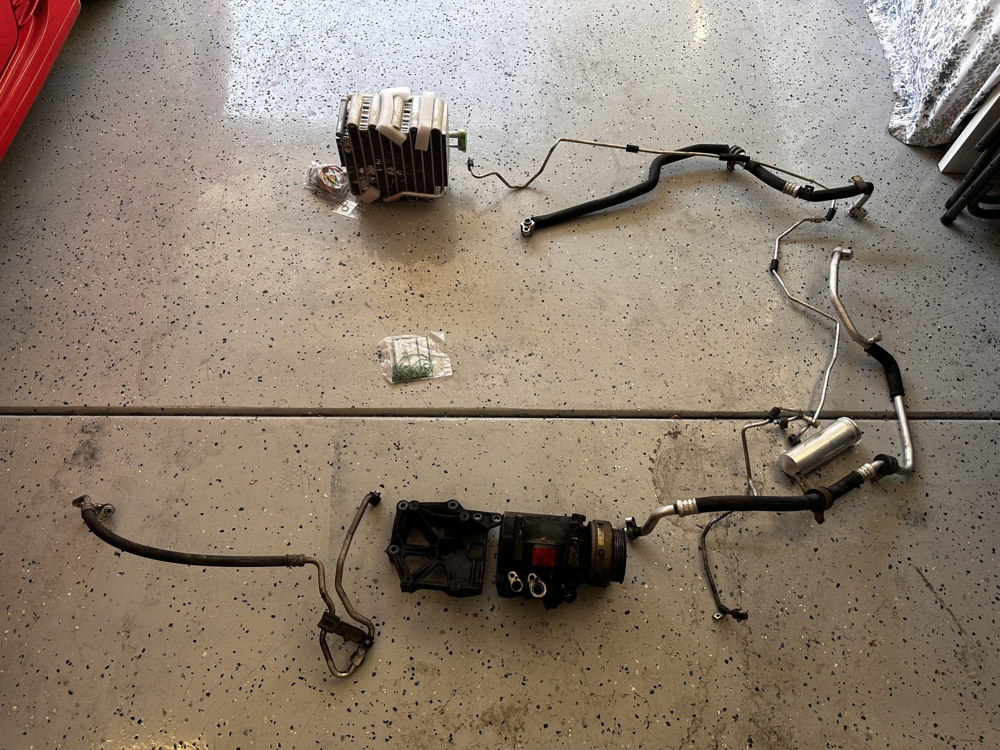
(not everything shown in image)
Wiring
The conversion required the wiring on the '99 compressor to be modified to fit the 1G/R12 wiring harness, which uses a 6 pin connector (5 used, 1 empty). Despite the wiring harness only having 3 pins on the 3G compressor, all of the wires are present to convert to 6 pin.
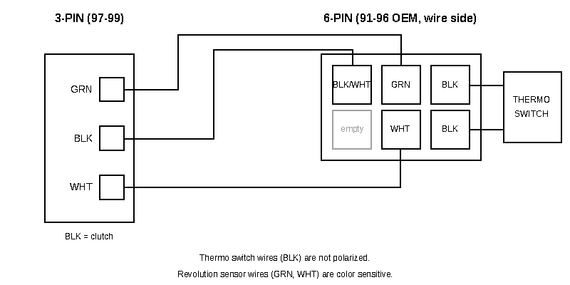
Note: Replacement compressors sold today (MSC105CVS) come with a 4-pin (2x2) connector, even though parts catalogs list them as a direct replacement for the original MR360247/MR360248. No OEM R134a compressor came with the 4-pin; all 1991-1996 cars use a 6-pin (2x3) harness connector, so the 4-pin will not plug in. The fix is to cut the 6-pin connector off the old compressor and splice it onto the new compressor's wires by color.
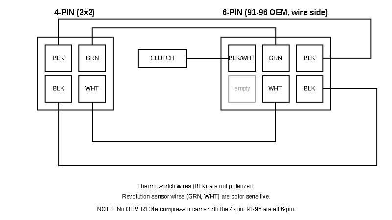
Engine-side bracket
The AC compressor bracket is different between the R12 and R134a compressors. This means the 94-99 bracket is the same part.
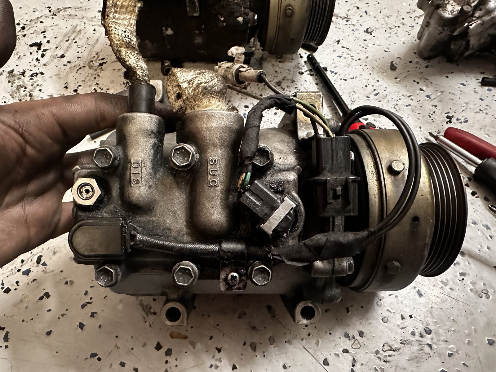
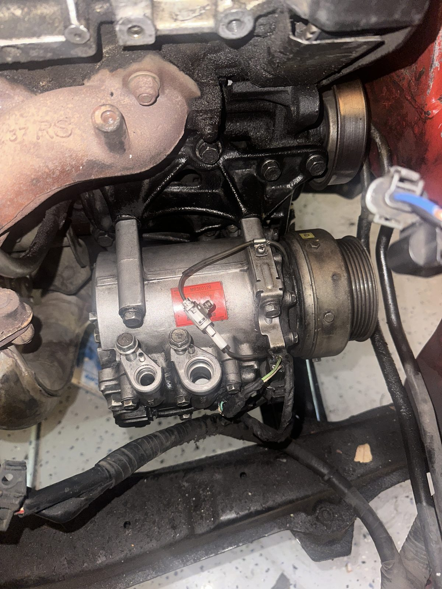
Flushing, oil, and seals
To ensure longevity of the AC system, everything must be cleaned of the previous R12 oils. The condenser and evaporator must be flushed, the receiver/drier replaced, and as much of the oil in the system as possible must be removed.
R12 refrigerant systems used a mineral-based compressor oil, where as R134a uses PAG oil (Polyalkylene Glycol). R134a doesn't distribute the older mineral oil around the system the way R12 does. An AC system works by distributing around the refrigerant and oil together, and R134a cannot distribute the old mineral oil effectively and it destroys the compressor.
Every single o-ring must be replaced. HNBR o-rings. Harbor Freight sells a generic set. AutoZone carries "AC seal kits" based on the car. The old seals are compromised as soon as the line is off, and it's likely the other ones are starting to fail by age and heat.
I flushed the compressor by filling the suction port with PAG 100 oil, and spinning the clutch over and over until the oil ran the same colour as the PAG 100 oil and I stopped seeing mineral oil.
I used Certified A/C Pro Flush and Clean (solvent based) to flush the lines, hoses, evaporator, and condenser. This must not be used on the compressor, it will destroy it.
I also filled a little under half of the recommended oil capacity into the evaporator rather than the full capacity into the compressor. I wanted to avoid hydrolocking the AC compressor by adding all of the oil into the compressor at once. A bit under half into the evaporator. The rest into the compressor. Some was added, the clutch spun, more added, and so on.
Vacuum and recharge
After reassembly, the system held a vacuum overnight without any drop. Refilled with PAG 100 oil and R134a refrigerant according to the specs of a '99 AC system. Though, I ran out of R134a before the system was at full capacity, short of about 40g of refrigerant. Still blows wickedly cold.
And y'know what they say, AC blows ice cold, I know what I have.
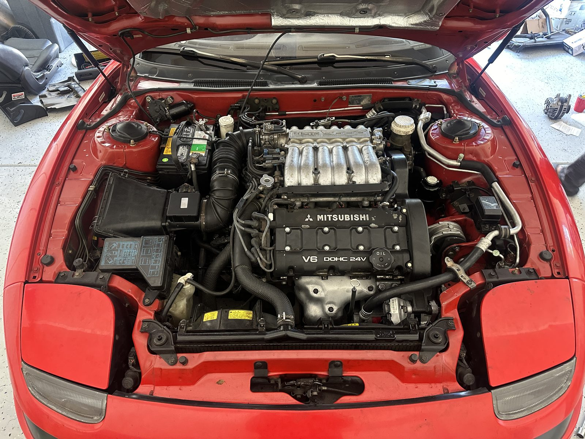
What about a retrofit?
Theoretically, a complete evacuation and flush of an R12 system with new o-rings, PAG oil, and drier/receiver would also restore and retrofit the R12 system to the R134a refrigerant. This practice was carried out through retrofit kits offered in the 90s that converted systems to R134a, typically having a larger adapter valve fitted to the R12 lines.
Why the full swap
The full swap was done so every part of the AC system could simultaneously be thoroughly inspected. Replacing parts one by one sometimes blurs the bigger picture.
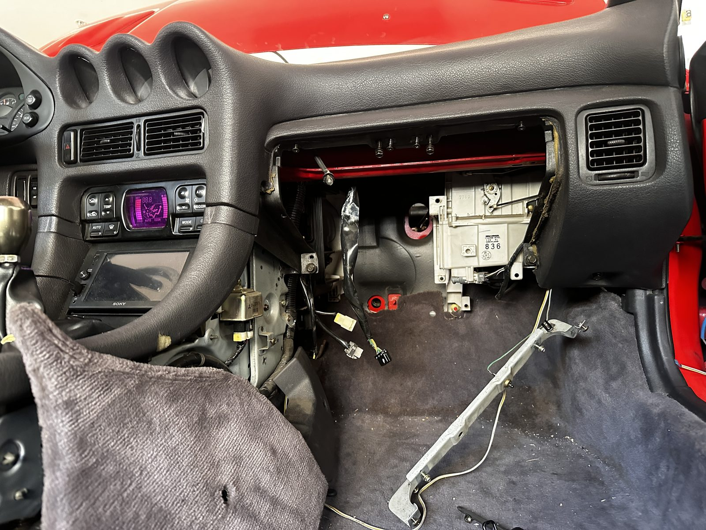
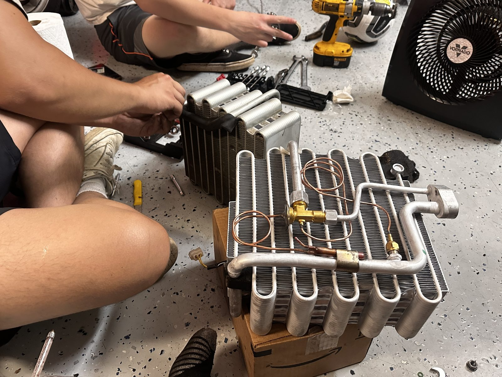
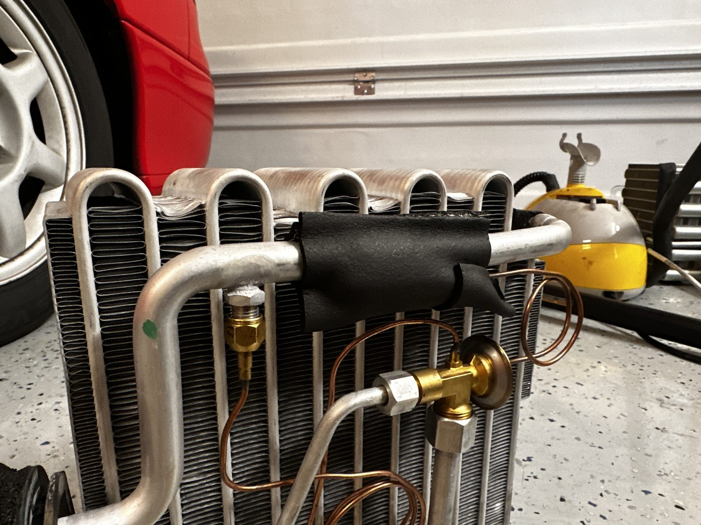
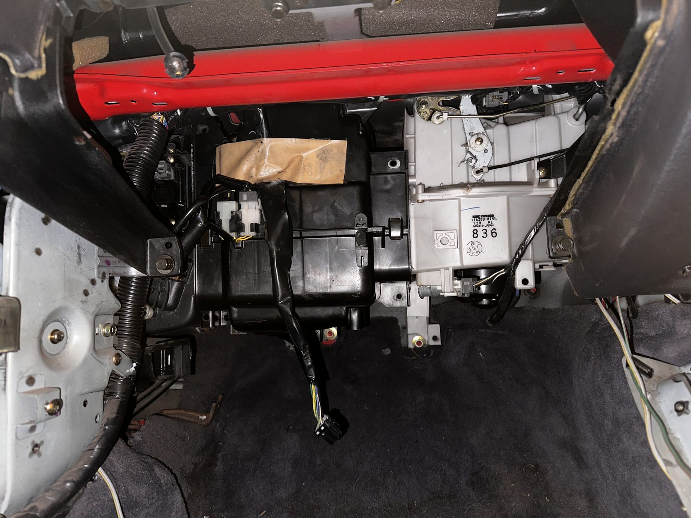
After several shops confirmed my AC was sealed, and it was still leaking, I settled on this option. Fortunately or unfortunately, during the swap, I found a shredded up rubber hose going from the condenser to the compressor. Lucky for me, I had the replacement, and it's important to remember that the rubber hoses are different between R12 and R134a.
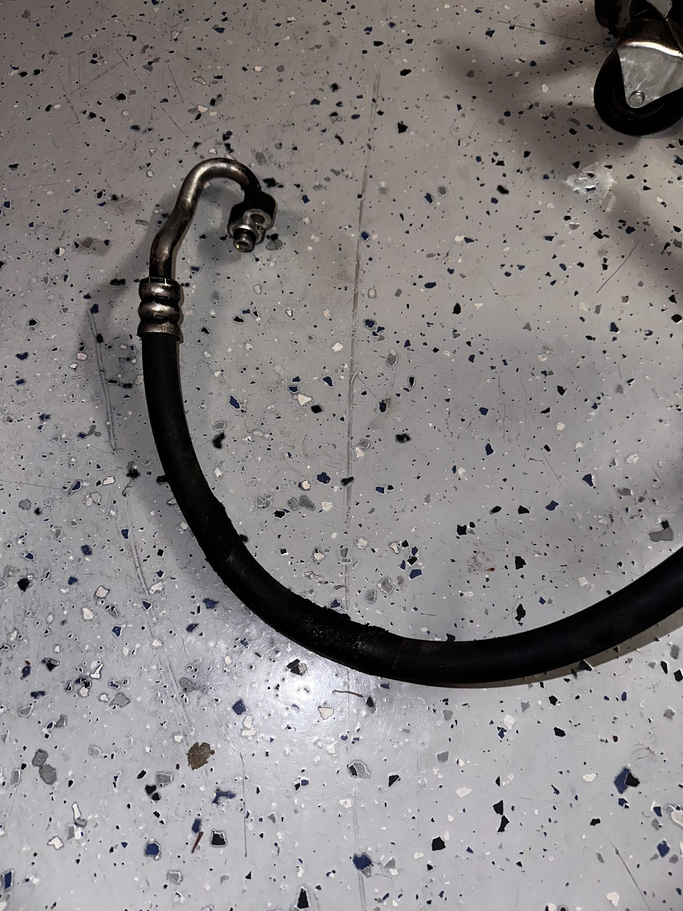
Not as difficult as it seems, but also not the most straightforward. A more detailed write up will be up eventually when I find the time and motivation, but hopefully for now, this will be useful for you soldiers tanking the heat.
-lychi (2024)
Sources
1999 3000GT SL A/C wiring diagrams
3si.org: AC compressor upgrade/conversion, first gen to second gen
3si.org: Need help with A/C compressor
stealth316.com: AC compressor replacement